Report on the use of passive acoustic monitoring for songbirds and seabirds on Lanz and Cox Islands

Note
This report is dynamically generated, meaning its results may evolve with the addition of new data or further analyses. For the most recent updates, refer to the publication date and feel free to reach out to the authors.
Abstract
Passive acoustic monitoring was conducted on Lanz and Cox Islands to characterize seabird and songbird communities. Autonomous recording units (ARUs) were deployed at 20 locations and analyzed using a combination of machine-learning algorithms and expert human validation. This report summarizes species presence, temporal patterns of detection, and relative abundance for seabirds and songbirds, and provides spatial representations of detections across both islands. These results establish a baseline to support evaluation of seabird prospecting activity and future changes in avian communities.
Land Acknowledgement
The land and sea in the Scott Islands are located within the territories of the Quatsino and T̕łat̕łasikwa̱la First Nations. BC Parks and Environment and Climate Change Canada – Canadian Wildlife Service are working in partnership with Quatsino and T̕łat̕łasikwa̱la First Nations and for this part of the larger project, they would like to express their gratitude to T̕łat̕łasikwa̱la First Nation member Anne Wilson and Quatsino First Nation Guardians, Graem Hall and Damien Walkus, for providing in-field support during deployment and collection of audio recordings on Lanz and Cox Islands. A special thanks to Quatsino First Nation Coordinators, Lyubava Erko and Suzanne Hopkinson and T̕łat̕łasikwa̱la First Nation consultants, Amy Krull and David Steele for facilitating field support.
Funding Acknowledgement
This project was funded in part by the BC License Plate program.
Introduction
Lanz and Cox Islands are part of the Scott Islands Provincial Park and the Scott Islands Marine National Wildlife Area, the largest national wildlife area in Canada. The area protects important seabird and songbird habitats, yet populations have been negatively affected by the presence of invasive predators. As part of a broader initiative, passive acoustic monitoring was implemented to document avian community composition. This report presents the results of these analyses, including species detected, timing of detections, relative abundance metrics, and spatial patterns of occurrence. Together, these data provide a baseline for monitoring that can be compared to assess other project outcomes and ecological recovery.
Methods
Data collection
Autonomous recording units (ARUs; Shonfield and Bayne (2017)) were deployed in three stages between 2024 and 2025 across Lanz and Cox Islands (Figure 1), with the final data retrievals taking place in March 2026. Sites were accessed via helicopter. Recordings were collected on a schedule of recording for five minutes every 15 minutes at 44100 Hz. A total of 243,204 recordings were collected totalling 20,155 audio hours of data (Figure 2).
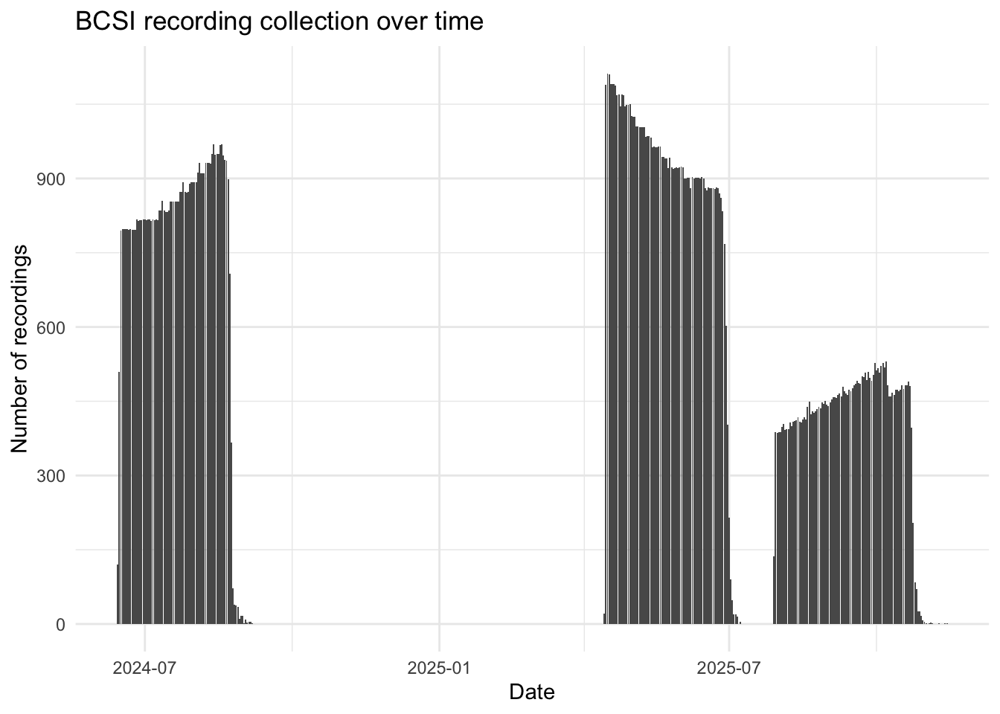
Data management, processing and quality control
Acoustic data were uploaded and processed using WildTrax (A. G. MacPhail et al. (2026)), with detections verified using expert review informed by prior experience in marine acoustic environments. Location names were confirmed against the deployment information to ensure data from each location was consistently named and aggregated from each deployment.
Community data processing
For each sampling location and year, a total of nine recordings, each 3 minutes in duration, were analyzed to characterize the songbird community. All vocalizing species were identified, and the abundance of each species was estimated using a count-removal framework (Farnsworth et al. (2002)) based on time-to-first-detection, which helps reduce positive bias associated with repeated detections of the same individual within a recording. Recordings were intentionally distributed across diel periods to capture variation in vocal activity. Five recordings were selected during the dawn period (04:00–07:59), when songbird detectability is typically highest. Two recordings were selected during dusk (19:00–22:59), and two during the night (23:00–03:59), allowing for detection of crepuscular or nocturnally active species and providing a more complete representation of the avian community. This standardized temporal sampling design ensured consistent effort across locations and years while maximizing detectability across species with differing activity patterns.
As coastal proximity may reduce species detection effectiveness, as wave action and wind-driven noise can mask vocalizations and shrink effective detection distances (Pijanowski et al. (2011)), we examined whether distance and cardinal to the nearest coastline predicted observed species richness across monitoring locations. We also compared geophonic acoustic indices (Towsey et al. (2017)) against WildTrax noise metrics to establish thresholds for task exclusion and to characterize background noise conditions at each site. We modeled maximum noise level as an ordinal response (Low < Medium < High < Extreme) using a cumulative link model with distance to coast and coastline orientation (sine/cosine transformation) as predictors.
Use of automated classifiers on seabirds
We first wanted to assess the accuracy of the current version of the HawkEars (v1.0.8) classifier for three focal species in the group for which the classifier already possesed species: Common Murre (Uria aalge ; COMU), Marbled Murrelet (Brachyramphus marmoratus ; MAMU), and Black Oystercatcher (Haematopus bachmani ; BLOY). We extracted all recordings from WildTrax in which the classifier detected these species, yielded mean score of 0.33 +/- 0.21. A human reviewer then verified each task, confirming detections as either true positives (TP) where the species was audible and confirmed, or false positives (FP) where the identification was incorrect. Using these verified results, we applied the wt_evaluate_classifier() and wt_classifier_threshold() functions from the wildrtrax R package (A. MacPhail, Becker, and Knight (n.d.)) to calculate precision, recall, and F-score. This allowed us to identify the minimum confidence threshold at which classifier performance was deemed acceptable for each species, balancing the trade-off between retaining true detections and excluding false positives. Recordings scoring below this optimized threshold were excluded from subsequent analyses, while those meeting or exceeding it were accepted without further manual review. This approach is consistent with emerging best practices for deploying automated classifiers at scale, where full human review is impractical and a validated threshold provides a reproducible and defensible basis for data inclusion. Next, we expanded the evaluation of classifier performance using HawkEars 2.0. This updated model, which is not currently implemented within WildTrax, incorporates an expanded seabird species set: Pink-footed Shearwater (Puffinus creatopus ; PFSH), Ancient Murrelet (Synthliboramphus antiquus ; ANMU), Tufted Puffin (Fratercula cirrhata ; TUPU) and Rhinoceros Auklet (Cerorhinca monocerata ; RHAU). We conducted a structured verification of outputs from HawkEars 2.0 by manually reviewing detections and identified any systematic misclassifications, in order to evaluate how the expanded species list influenced both true positive retention and false positive rates.
Seabird relative abundance
Positive seabird detection locations were spatially intersected with island boundary polygons derived from the Canada Waters 2016 boundary file. Detection intensity across each island was estimated using inverse distance weighting (IDW) interpolation using the gstat R package (Pebesma, Graeler, and Pebesma (2015)). For each survey location, total seabird detections were summed across all species in the target assemblage. A regular 50-m resolution grid was generated across the island extents and masked to land area only, ensuring interpolation was strictly constrained within island boundaries. IDW was computed at each grid cell as a distance-weighted mean of all detection point values, using an inverse square distance weighting function (power parameter = 2). This approach produces a continuous surface where predicted intensity at any location is most strongly influenced by nearby detection points and decays with increasing distance. No landcover covariates were used in the interpolation.
Results
Songbird species richness and diversity
A total of 30 species were found with a summary of detections found at Table 2. Figure 3 describes the relationship of species richness for each location across the two years of surveys. Shannon’s diversity was also calculated (see Figure 4). No significant differences in species richness or Shannon’s diversity was obsvered between years despite differences in individual location metrics. This can be explained by the variability in detection of certain species and the availability of individual species for vocalization.
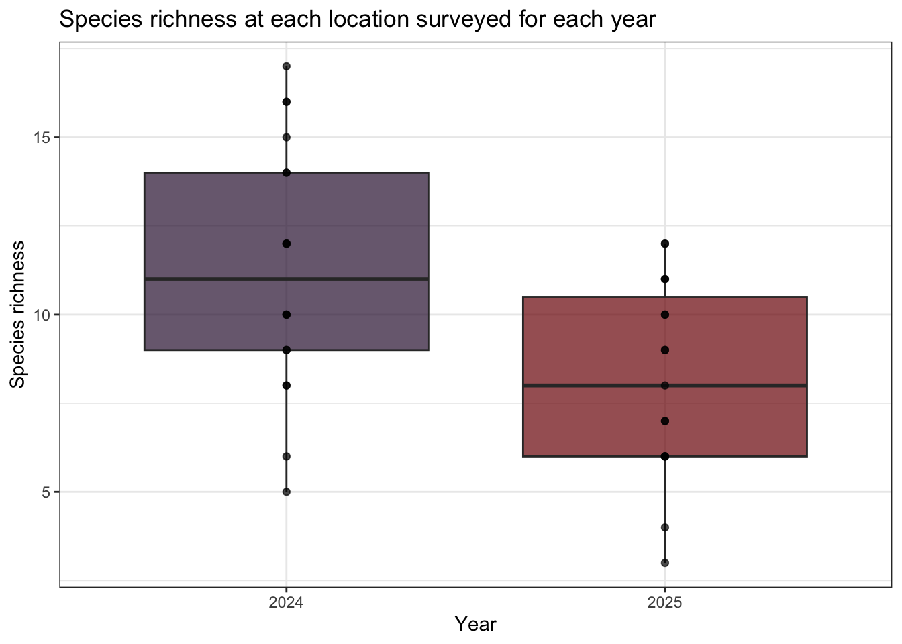
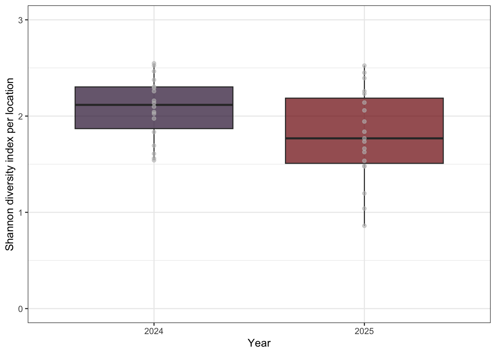
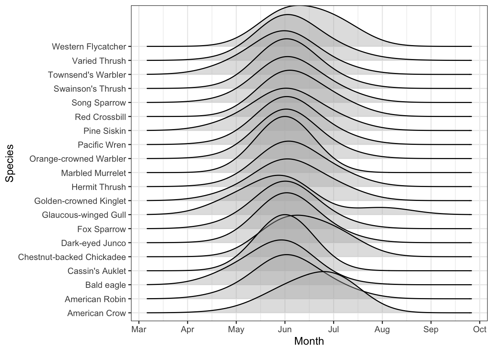
Noise effects
Noisier recordings captured fewer birds (Figure 6). At Low and Medium noise levels, recorders typically detected around 5 individuals per recording, while High and Extreme noise levels roughly halved that, dropping to medians of approximately 3 and 2 individuals respectively. At the noisiest sites, many recordings picked up no birds at all. Occasional bursts of high detections (up to 20 individuals) did occur even under noisy conditions, but these were the notable exception. Not all sites experienced the same noise conditions (Figure 7). Most DC sites were consistently loud, with the majority reaching High noise levels and DC13 and DC15 hitting Extreme. DL sites were generally quieter, with most sitting around Medium noise, though DL02, DL11, DL12, and DL15 also reached High levels. DL06 stood out as the quietest location overall. Several sites also fluctuated across noise categories over the survey period, meaning detection conditions were not always consistent even within a single location. The systematically higher noise at DC sites likely explains some of the lower and more variable seabird detections recorded there compared to DL sites.
Island identity did not significantly improve model fit (ΔAIC = 0.07, p = 0.16), nor was there evidence for an interaction between island and distance (ΔAIC = 1.94, p = 0.79), indicating that the relationship between distance to coast and noise level was consistent across islands. Distance to coast showed a clear shift in the probability distribution across noise categories (Figure 8), with the probability of High noise declining substantially with increasing distance, from ~45% at 50 m to ~15–20% near 750 m. In contrast, the probability of Low noise increased steadily with distance, rising from ~5–10% near the coast to ~30% inland. Medium noise remained the most probable category across most distances, peaking around ~50–55% at intermediate distances (~600–800 m), while Extreme noise was consistently rare and declined slightly with distance (~10% to <5%). Coast direction did not appear to play an important role (Figure 9).
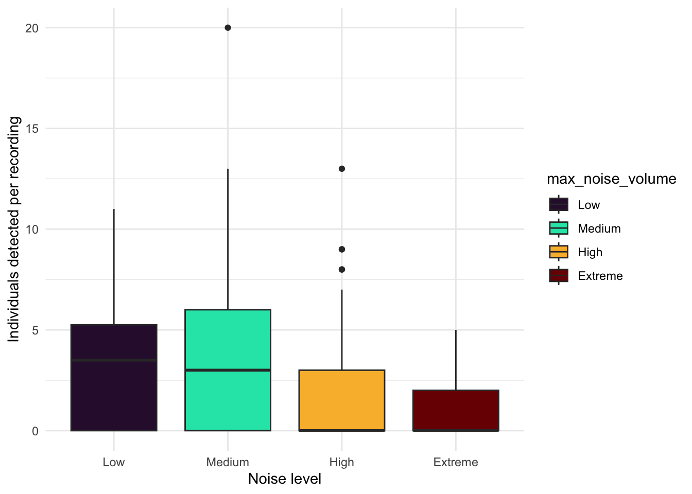
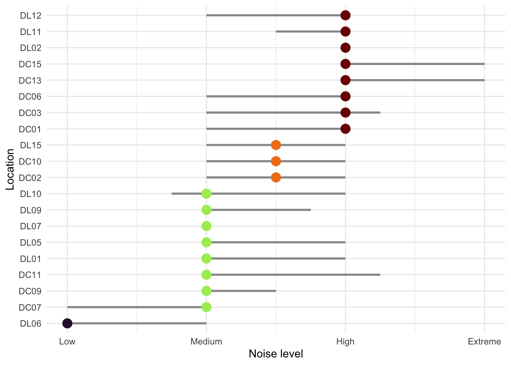
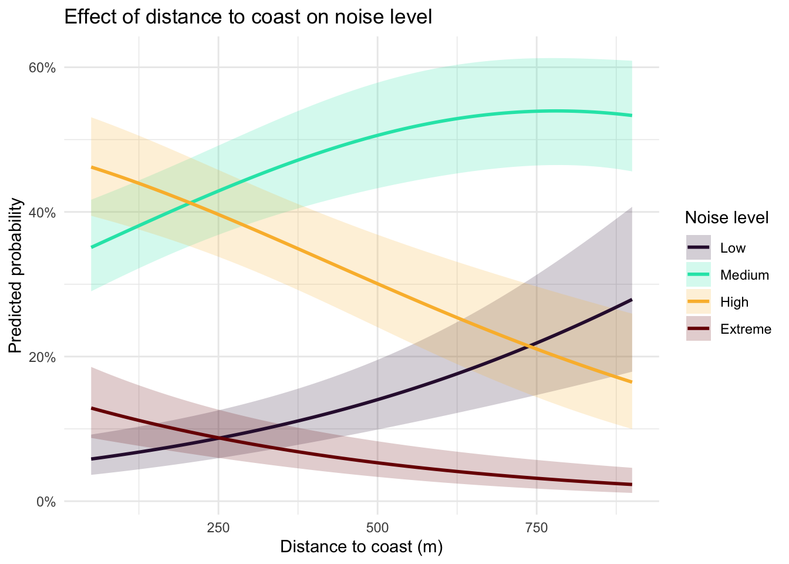
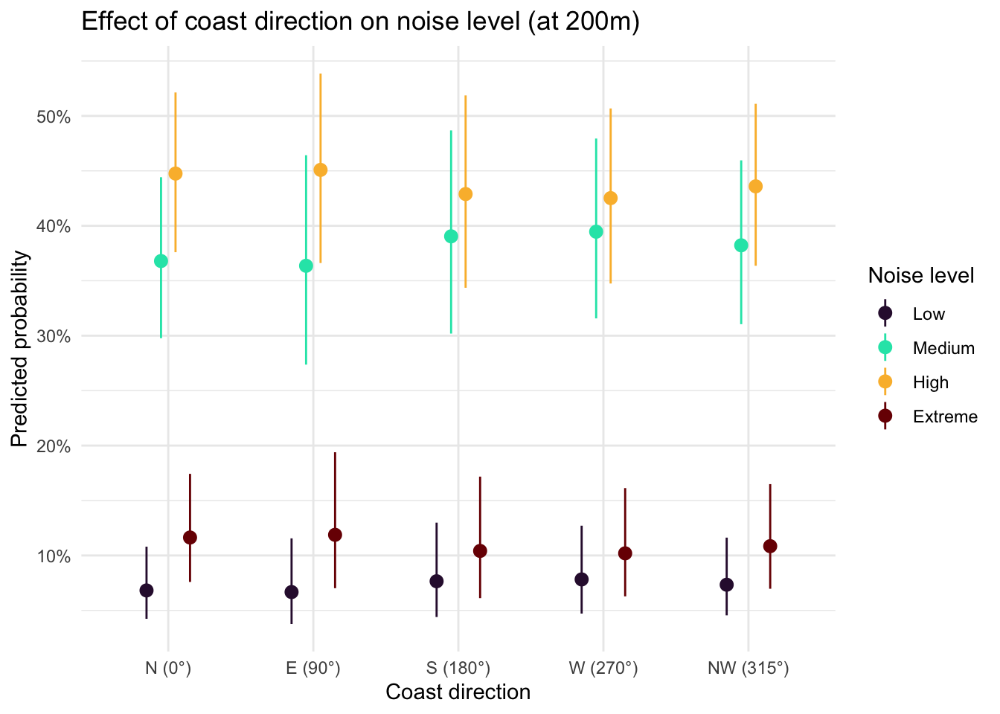
Evaluation of HawkEars v1.0.8
Precision-recall curves were generated to evaluate classifier performance across all confidence thresholds for both Birdnet v2.1 and HawkEars v1.0.8. At low recall values (≤ 0.25), both classifiers achieved comparable precision (~0.65), indicating that high-confidence detections from either classifier are similarly reliable. As recall increased, classifier performance diverged: Birdnet v2.1 maintained a moderately higher precision across mid-to-high recall values (0.25–1.0), stabilizing around 0.30 at full recall. HawkEars declined more steeply, reaching ~0.13 at high recall, though it exhibited considerable variability across species (wide confidence interval) particularly between recall values of 0.25–0.75. These results suggest that Birdnet v2.1 is more conservative and consistent when detections are aggregated across species, while HawkEars shows greater species-level variability in the precision-recall tradeoff. The optimal operating threshold for both classifiers lies at low-to-moderate recall, where precision remains above 0.50.
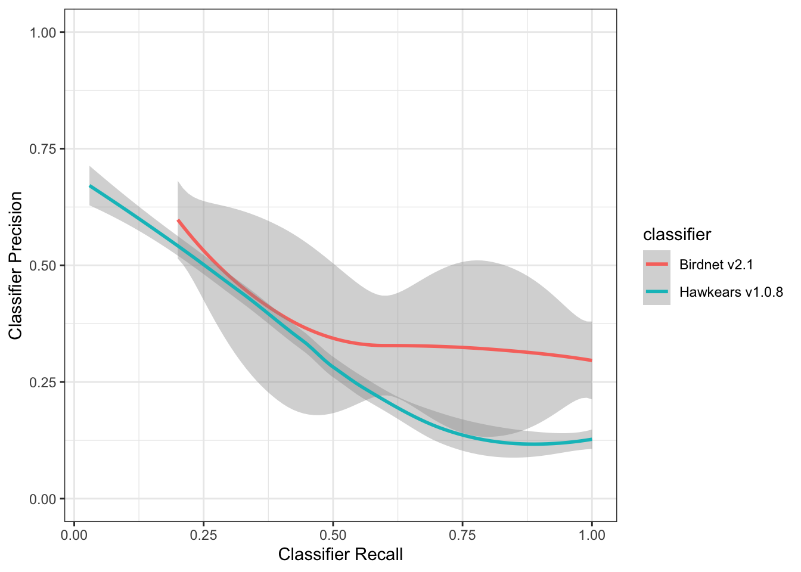
HawkEars 2.0
Initial runs of HawkEars 2.0 were conducted yielding seabird detections (109765) in a total of 109765 recordings or 45.13 % of the total audio dataset, with raw data visible in ?@fig-raw-he2. MAMU had the most HawkEars detections at most DC and DL sites. It had more high confidence (0.75 - 1.0) detections than the other seabirds. CAAU and COMU were the next most frequently detected species, with more scores in the lower and mid confidence range (0.-0.25 and 0.25-0.5). ANMU, RHAU and TUPU were detected much less overall than the other three seabird species, generally with lower confidence scores. Leach’s Storm-petrels (LESP), Black-footed Albatross (BFAB) and Short-tailed Albatross (STAB) were not included in the HawkEars 2.0 model due to limited accessible and public recordings to use for training. These species may be included in future HawkEars models if more or better training data is available.
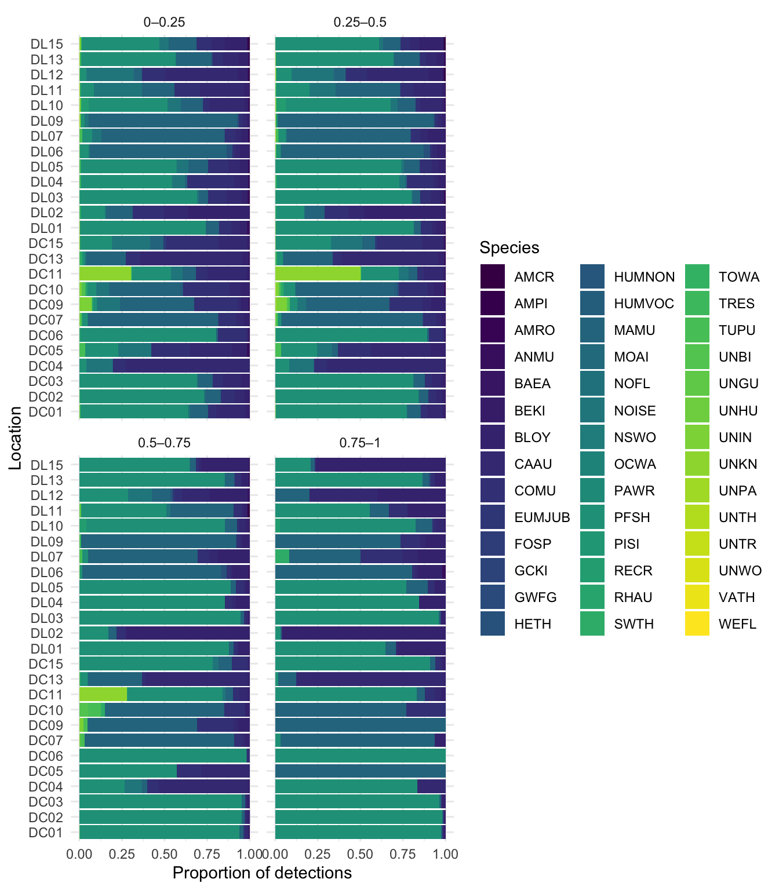
Across all 4 tags assessed, 4 (100%) have been manually verified, while 0 remain unreviewed. Verification involved manual inspection of classifier outputs and reassignment of detections to correct acoustic categories; tags reassigned to non-seabird classes (NOISE, HUMVOC, UNIN, HETH, PAWR, TOWA, UNBI) represent confirmed false positives of the seabird classifier. Among target seabird taxa, performance varies substantially across species. TUPU had the largest number of detections (2 total tags), of which 2 were verified; all reviewed detections were reassigned, yielding a verified false positive rate of 100%. RHAU showed similarly high error rates, with verified tags and a false positive rate of . ANMU also exhibited strong misclassification within the reviewed subset, with verified tags and a false positive rate of , with a small number of detections () remaining unreviewed. MAMU and COMU remain highly uncertain due to large proportions of unverified detections. For MAMU, of tags remain unverified, and all reviewed detections were reassigned (100% verified false positives). COMU shows a lower but still elevated verified false positive rate of , with unverified tags remaining. CAAU is now represented by a small verified sample ( tags), all of which were correctly classified as true positives, resulting in a verified false positive rate of 0%. However, the majority of detections () remain unreviewed, limiting inference. PFSH shows no misclassification within the verified subset ( verified tags, all true positives), although a substantial number of detections () remain unverified, meaning performance may change with full review. BLOY similarly demonstrates perfect performance in the reviewed subset, with verified tags and no false positives, although detections remain unverified. Non-seabird reassignment categories collectively account for 2 tags, representing instances where the seabird classifier incorrectly assigned detections. Among these, NOISE dominates with 2, followed by UNIN with , indicating that environmental noise and insect vocalisations are the primary sources of misclassification in this dataset.
Seabird relative abundance and activity
Spatial patterns of seabird relative abundance across the Scott Islands are shown in Figure 12. Detection intensity exhibited strong spatial clustering, with activity concentrated predominantly in the northwestern portion of Lanz Island. Two distinct hotspots were identified in the northwest and west-central areas of Lanz Island, with intensity declining steeply eastward across the island. Cox Island displayed comparatively lower and more spatially uniform detection intensity overall, though notable areas of elevated abundance were observed in both the western and eastern portions of the island. Diel patterns of seabird detections can also be found in Figure 13 and Figure 14. Median julian date was 210 (~August 6th) and the most common hours of detections were between dusk and -30 mins before dawn.
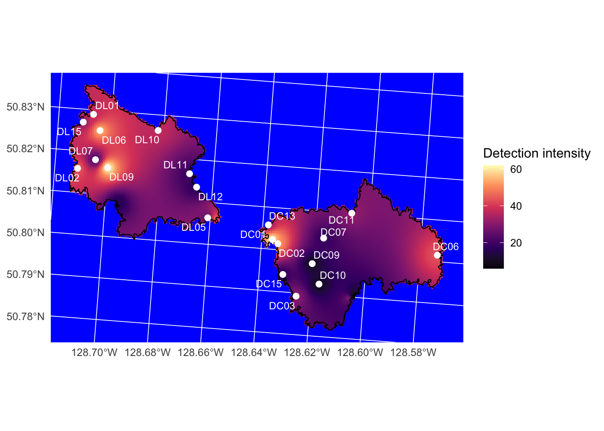
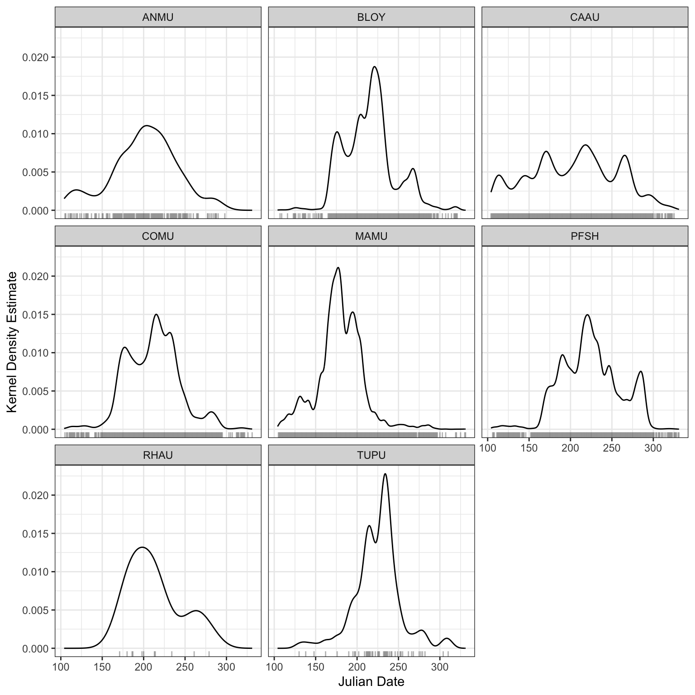
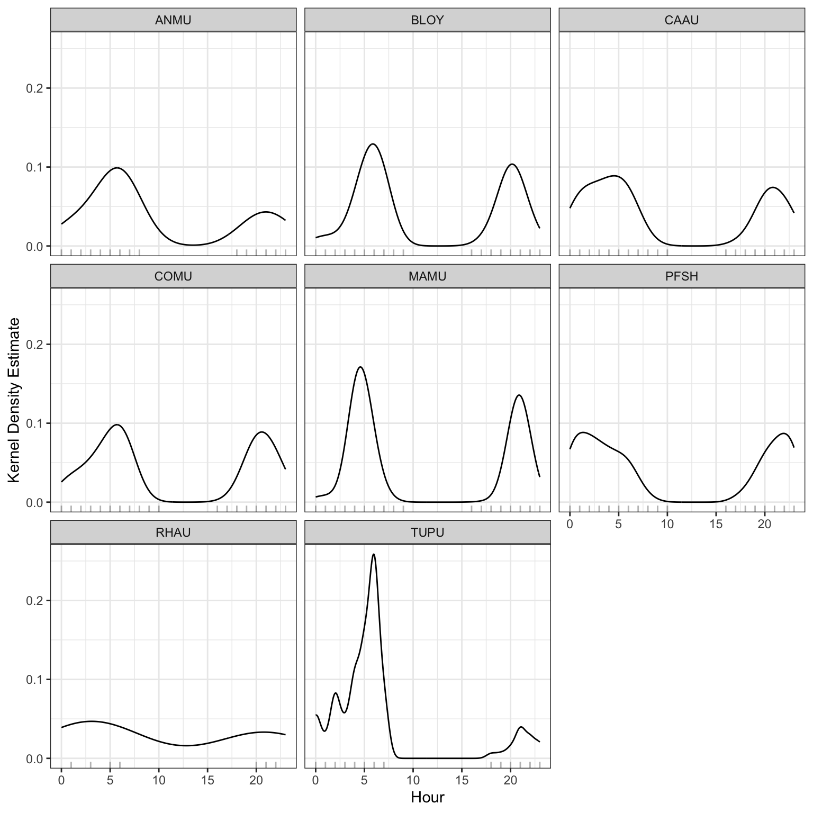
Discussion and recommendations
Acoustic classifier performance and seabirds
This program produced a dataset of sufficient resolution to support long-term passive monitoring programs, offering a scalable and repeatable method for processing large volumes of acoustic data. Misclassification rates and false positives remain an inherent limitation of automated classifiers, particularly in field conditions where behavioural overlap between sound categories is common. Seabirds frequently produce detectable acoustic signals across multiple behavioural states simultaneously, vocalization, preening, and on-water activity often co-occur, complicating clean categorical assignment (da Silva Cerqueira et al. (2025)). This reflects the ecological realism of field recordings rather than a failure of the classification approach, and should be accounted for when interpreting detection outputs. For future long-term deployments, a sampling rate of 22 kHz is likely sufficient given that the dominant frequencies of seabird vocalisations typically fall below 10 kHz, which would reduce storage requirements and extend battery life without meaningful loss of biological signal (Podolskiy et al. (2024)). An additional important caveat to note is that while these classifiers were trained and tested on datasets with seabirds in them, a generalized approach is typically to determine precision-recall rates on sites known to have the species. In this case, as the breeding activity on Lanz and Cox Islands is still unknown, it is difficult to make inferences around the true classifier performance. Future work can focus on the validation of the classifier on true positive sites.
Seabird abundance measurements
This study does not attempt to derive absolute abundance or population size estimates for Lanz and Cox islands; however, the dataset provides a foundation for such analyses in future work. Presence–absence detections can be used as a basis for occupancy modelling or relative abundance indices, particularly when combined with spatially replicated recorder deployments. Notably, the majority of detections in this dataset consisted of single-individual vocalizations (n = 1 per detection event), suggesting that call rate may serve as a proxy for local activity levels rather than group size. The strait between the two islands also appeared to represent a zone of relatively elevated activity, potentially reflecting potential inter-island movement or shared foraging habitat. Mapping the spatial distribution of detections across sites would allow identification of acoustic hotspots, which could inform targeted survey efforts. Integrating detection data with diel activity patterns (Podolskiy et al. (2024)) may further clarify whether observed variation in call rates reflects changes in abundance, behaviour, or both.
Timing of seabird detections
While diel activity patterns suggest clear patterns with known seabird activity, the seasonal patterns do not typically reflect standard known times of year when these seabird species are known to breed. This could suuggest that the primary capture of seabird activity on Lanz and Cox Islands through this acoustic dataset is due to foraging, feeding and prospecting activities as mentioned in Section 7.1.
Coastal monitoring
Passive acoustic monitoring in high-geophonic-noise environments presents a significant methodological challenge, as abiotic noise sources including wave action, wind, and hydrological activity, can mask biological signals across relevant frequency ranges. The present dataset indicates a gradient in background noise intensity from coastal to inland sites, with the most pronounced transition occurring between the High and Low noise categories. While geophonic noise levels did not directly predict seabird detection rates, their pervasive influence on signal-to-noise ratios warrants careful consideration in site selection and recorder placement. Monitoring stations situated in high-noise environments risk systematic underdetection of target species, potentially biasing occupancy and abundance estimates if not corrected for in subsequent analyses.
References
da Silva Cerqueira, Aline, Robin Freeman, Richard A. Phillips, and Terence P. Dawson. 2025. “Automated Classification of Albatross Acoustic Behaviour at Sea: A Free and Open-Source Classifier for Seabird Sounds.” Ecological Informatics 92: 103474. https://doi.org/https://doi.org/10.1016/j.ecoinf.2025.103474.
Farnsworth, George L, Kenneth H Pollock, James D Nichols, Theodore R Simons, James E Hines, and John R Sauer. 2002. “A Removal Model for Estimating Detection Probabilities from Point-Count Surveys.” The Auk 119 (2): 414–25.
Huus, Jan, Kevin G Kelly, Erin M Bayne, and Elly C Knight. 2025. “HawkEars: A Regional, High-Performance Avian Acoustic Classifier.” Ecological Informatics 87: 103122.
Kahl, Stefan, Connor M Wood, Maximilian Eibl, and Holger Klinck. 2021. “BirdNET: A Deep Learning Solution for Avian Diversity Monitoring.” Ecological Informatics 61: 101236.
MacPhail, Alexander G., Corrina Copp, Erin Bayne, Charles Francis, Michael Packer, Chad Klassen, Kevin Kelly, et al. 2026. “WildTrax: A Platform for the Management, Storage, Processing, Sharing and Discovery of Avian Data.”
MacPhail, Alex, Marcus Becker, and Elly Knight. n.d. “wildrtrax: Environmental Sensor Data Management and Analytics to and from WildTrax.” https://abbiodiversity.github.io/wildrtrax/.
Oksanen, Jari, Frank G Blanchet, Roeland Kindt, Pierre Legendre, Peter R Minchin, Robert B O’Hara, Gavin L Simpson, et al. 2010. “Canonical Analysis of Principal Coordinates: A Useful Method of Constrained Ordination for Ecology.” Ecology 92 (3): 597–611. https://doi.org/10.1890/10-0340.1.
Pebesma, Edzer, Benedikt Graeler, and Maintainer Edzer Pebesma. 2015. “Package ‘Gstat’.” Comprehensive R Archive Network (CRAN), 1–0.
Pijanowski, Bryan C., Luis J. Villanueva-Rivera, Sarah L. Dumyahn, Almo Farina, Bernie L. Krause, Brian M. Napoletano, Stuart H. Gage, and Nadia Pieretti. 2011. “Soundscape Ecology: The Science of Sound in the Landscape.” BioScience 61 (3): 203–16. https://doi.org/10.1525/bio.2011.61.3.6.
Podolskiy, Evgeny A., M. Ogawa, Jean-Baptiste Thiebot, Kasper L. Johansen, and Anders Mosbech. 2024. “Acoustic Monitoring Reveals a Diel Rhythm of an Arctic Seabird Colony (Little Auk, Alle Alle).” Communications Biology 7 (1): 307. https://doi.org/10.1038/s42003-024-05954-8.
Shannon, Claude Elwood. 1948. “A Mathematical Theory of Communication.” The Bell System Technical Journal 27 (3): 379–423.
Shonfield, Julia, and Erin M Bayne. 2017. “Autonomous Recording Units in Avian Ecological Research: Current Use and Future Applications.” Avian Conservation & Ecology 12 (1).
Towsey, Michael W et al. 2017. “The Calculation of Acoustic Indices Derived from Long-Duration Recordings of the Natural Environment.”